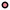

<!doctype html>
<html lang="en">
    <head>
        <meta charset="utf-8">
        <meta http-equiv="X-UA-Compatible" content="IE=edge">
        <meta name="viewport" content="initial-scale=1,user-scalable=no,maximum-scale=1,width=device-width">
        <meta name="mobile-web-app-capable" content="yes">
        <meta name="apple-mobile-web-app-capable" content="yes">
        <link rel="stylesheet" href="css/leaflet.css"><link rel="stylesheet" href="css/L.Control.Locate.min.css">
        <link rel="stylesheet" href="css/qgis2web.css"><link rel="stylesheet" href="css/fontawesome-all.min.css">
        <link rel="stylesheet" href="css/leaflet-control-geocoder.Geocoder.css">
        <style>
        html, body, #map {
            width: 100%;
            height: 100%;
            padding: 0;
            margin: 0;
        }
        </style>
        <title>Mobilitat dels estudiants universitaris de la Riera de Caldes (Cicle i Grau)</title>
    </head>
    <body>
        <div id="map">
        </div>
        <script src="js/qgis2web_expressions.js"></script>
        <script src="js/leaflet.js"></script><script src="js/L.Control.Locate.min.js"></script>
        <script src="js/leaflet.rotatedMarker.js"></script>
        <script src="js/leaflet.pattern.js"></script>
        <script src="js/leaflet-hash.js"></script>
        <script src="js/Autolinker.min.js"></script>
        <script src="js/rbush.min.js"></script>
        <script src="js/labelgun.min.js"></script>
        <script src="js/labels.js"></script>
        <script src="js/leaflet-control-geocoder.Geocoder.js"></script>
        <script src="data/EstudiantsdeCicleiGrauuniversitari_1.js"></script>
        <script>
        var map = L.map('map', {
            zoomControl:true, maxZoom:28, minZoom:1
        }).fitBounds([[41.08042046020635,0.5501715144488352],[42.016022242051534,2.884304883858753]]);
        var hash = new L.Hash(map);
        map.attributionControl.setPrefix('<a href="https://github.com/tomchadwin/qgis2web" target="_blank">qgis2web</a> &middot; <a href="https://leafletjs.com" title="A JS library for interactive maps">Leaflet</a> &middot; <a href="https://qgis.org">QGIS</a>');
        var autolinker = new Autolinker({truncate: {length: 30, location: 'smart'}});
        L.control.locate({locateOptions: {maxZoom: 19}}).addTo(map);
        var bounds_group = new L.featureGroup([]);
        function setBounds() {
        }
        map.createPane('pane_OpenStreetMap_0');
        map.getPane('pane_OpenStreetMap_0').style.zIndex = 400;
        var layer_OpenStreetMap_0 = L.tileLayer('https://tile.openstreetmap.org/{z}/{x}/{y}.png', {
            pane: 'pane_OpenStreetMap_0',
            opacity: 1.0,
            attribution: '',
            minZoom: 1,
            maxZoom: 28,
            minNativeZoom: 0,
            maxNativeZoom: 19
        });
        layer_OpenStreetMap_0;
        map.addLayer(layer_OpenStreetMap_0);
        function pop_EstudiantsdeCicleiGrauuniversitari_1(feature, layer) {
            var popupContent = '<table>\
                    <tr>\
                        <th scope="row">UNI</th>\
                        <td>' + (feature.properties['UNI'] !== null ? autolinker.link(feature.properties['UNI'].toLocaleString()) : '') + '</td>\
                    </tr>\
                    <tr>\
                        <th scope="row">ESTUDIANTS</th>\
                        <td>' + (feature.properties['ESTUDIANTS'] !== null ? autolinker.link(feature.properties['ESTUDIANTS'].toLocaleString()) : '') + '</td>\
                    </tr>\
                </table>';
            layer.bindPopup(popupContent, {maxHeight: 400});
        }

        function style_EstudiantsdeCicleiGrauuniversitari_1_0(feature) {
            if (feature.properties['ESTUDIANTS'] >= 0.000000 && feature.properties['ESTUDIANTS'] <= 0.000000 ) {
                return {
                pane: 'pane_EstudiantsdeCicleiGrauuniversitari_1',
                radius: 2.0,
                opacity: 1,
                color: 'rgba(255,255,255,1.0)',
                dashArray: '',
                lineCap: 'butt',
                lineJoin: 'miter',
                weight: 2.0,
                fill: true,
                fillOpacity: 1,
                fillColor: 'rgba(255,255,255,1.0)',
                interactive: true,
            }
            }
            if (feature.properties['ESTUDIANTS'] >= 1.000000 && feature.properties['ESTUDIANTS'] <= 25.000000 ) {
                return {
                pane: 'pane_EstudiantsdeCicleiGrauuniversitari_1',
                radius: 2.85714,
                opacity: 1,
                color: 'rgba(0,0,0,1.0)',
                dashArray: '',
                lineCap: 'butt',
                lineJoin: 'miter',
                weight: 2.0,
                fill: true,
                fillOpacity: 1,
                fillColor: 'rgba(236,144,151,1.0)',
                interactive: true,
            }
            }
            if (feature.properties['ESTUDIANTS'] >= 26.000000 && feature.properties['ESTUDIANTS'] <= 50.000000 ) {
                return {
                pane: 'pane_EstudiantsdeCicleiGrauuniversitari_1',
                radius: 3.71428,
                opacity: 1,
                color: 'rgba(0,0,0,1.0)',
                dashArray: '',
                lineCap: 'butt',
                lineJoin: 'miter',
                weight: 2.0,
                fill: true,
                fillOpacity: 1,
                fillColor: 'rgba(223,106,114,1.0)',
                interactive: true,
            }
            }
            if (feature.properties['ESTUDIANTS'] >= 51.000000 && feature.properties['ESTUDIANTS'] <= 100.000000 ) {
                return {
                pane: 'pane_EstudiantsdeCicleiGrauuniversitari_1',
                radius: 4.57142,
                opacity: 1,
                color: 'rgba(0,0,0,1.0)',
                dashArray: '',
                lineCap: 'butt',
                lineJoin: 'miter',
                weight: 2.0,
                fill: true,
                fillOpacity: 1,
                fillColor: 'rgba(244,74,86,1.0)',
                interactive: true,
            }
            }
            if (feature.properties['ESTUDIANTS'] >= 101.000000 && feature.properties['ESTUDIANTS'] <= 200.000000 ) {
                return {
                pane: 'pane_EstudiantsdeCicleiGrauuniversitari_1',
                radius: 5.42858,
                opacity: 1,
                color: 'rgba(219,30,42,1.0)',
                dashArray: '',
                lineCap: 'butt',
                lineJoin: 'miter',
                weight: 2.0,
                fill: true,
                fillOpacity: 1,
                fillColor: 'rgba(219,30,42,1.0)',
                interactive: true,
            }
            }
            if (feature.properties['ESTUDIANTS'] >= 201.000000 && feature.properties['ESTUDIANTS'] <= 400.000000 ) {
                return {
                pane: 'pane_EstudiantsdeCicleiGrauuniversitari_1',
                radius: 8.0,
                opacity: 1,
                color: 'rgba(128,17,25,1.0)',
                dashArray: '',
                lineCap: 'butt',
                lineJoin: 'miter',
                weight: 2.0,
                fill: true,
                fillOpacity: 1,
                fillColor: 'rgba(177,18,29,1.0)',
                interactive: true,
            }
            }
            if (feature.properties['ESTUDIANTS'] >= 401.000000 && feature.properties['ESTUDIANTS'] <= 800.000000 ) {
                return {
                pane: 'pane_EstudiantsdeCicleiGrauuniversitari_1',
                radius: 10.0,
                opacity: 1,
                color: 'rgba(128,17,25,1.0)',
                dashArray: '',
                lineCap: 'butt',
                lineJoin: 'miter',
                weight: 2.0,
                fill: true,
                fillOpacity: 1,
                fillColor: 'rgba(144,11,20,1.0)',
                interactive: true,
            }
            }
        }
        map.createPane('pane_EstudiantsdeCicleiGrauuniversitari_1');
        map.getPane('pane_EstudiantsdeCicleiGrauuniversitari_1').style.zIndex = 401;
        map.getPane('pane_EstudiantsdeCicleiGrauuniversitari_1').style['mix-blend-mode'] = 'normal';
        var layer_EstudiantsdeCicleiGrauuniversitari_1 = new L.geoJson(json_EstudiantsdeCicleiGrauuniversitari_1, {
            attribution: '',
            interactive: true,
            dataVar: 'json_EstudiantsdeCicleiGrauuniversitari_1',
            layerName: 'layer_EstudiantsdeCicleiGrauuniversitari_1',
            pane: 'pane_EstudiantsdeCicleiGrauuniversitari_1',
            onEachFeature: pop_EstudiantsdeCicleiGrauuniversitari_1,
            pointToLayer: function (feature, latlng) {
                var context = {
                    feature: feature,
                    variables: {}
                };
                return L.circleMarker(latlng, style_EstudiantsdeCicleiGrauuniversitari_1_0(feature));
            },
        });
        bounds_group.addLayer(layer_EstudiantsdeCicleiGrauuniversitari_1);
        map.addLayer(layer_EstudiantsdeCicleiGrauuniversitari_1);
            var title = new L.Control();
            title.onAdd = function (map) {
                this._div = L.DomUtil.create('div', 'info');
                this.update();
                return this._div;
            };
            title.update = function () {
                this._div.innerHTML = '<h2>Mobilitat dels estudiants universitaris de la Riera de Caldes (Cicle i Grau)</h2>';
            };
            title.addTo(map);
            var abstract = new L.Control({'position':'bottomleft'});
            abstract.onAdd = function (map) {
                this._div = L.DomUtil.create('div',
                'leaflet-control abstract');
                this._div.id = 'abstract'

                    abstract.show();
                    return this._div;
                };
                abstract.show = function () {
                    this._div.classList.remove("abstract");
                    this._div.classList.add("abstractcollapsed");
                    this._div.innerHTML = 'Mapa elaborat per Francesc Pou Serras.<br />Tècnic de l\'Observatori de la Riera de Caldes.<br />Font: Secretaria General del Departament d\'Universitats, Recerca i Societat de la Informació. Generalitat de Catalunya.';
            };
            abstract.addTo(map);
        var osmGeocoder = new L.Control.Geocoder({
            collapsed: true,
            position: 'topleft',
            text: 'Search',
            title: 'Testing'
        }).addTo(map);
        document.getElementsByClassName('leaflet-control-geocoder-icon')[0]
        .className += ' fa fa-search';
        document.getElementsByClassName('leaflet-control-geocoder-icon')[0]
        .title += 'Search for a place';
        var baseMaps = {};
        L.control.layers(baseMaps,{'Estudiants de Cicle i Grau universitari<br /><table><tr><td style="text-align: center;"></td><td>0 desplaçaments </td></tr><tr><td style="text-align: center;"></td><td>1 - 25 desplaçaments</td></tr><tr><td style="text-align: center;"></td><td>26 - 50 desplaçaments</td></tr><tr><td style="text-align: center;"></td><td>51 - 100 desplaçaments</td></tr><tr><td style="text-align: center;"></td><td>101 - 200 desplaçaments</td></tr><tr><td style="text-align: center;"></td><td>201 - 400 desplaçaments</td></tr><tr><td style="text-align: center;"></td><td>401 - 800 desplaçaments</td></tr></table>': layer_EstudiantsdeCicleiGrauuniversitari_1,"OpenStreetMap": layer_OpenStreetMap_0,},{collapsed:false}).addTo(map);
        setBounds();
        </script>
    </body>
</html>
